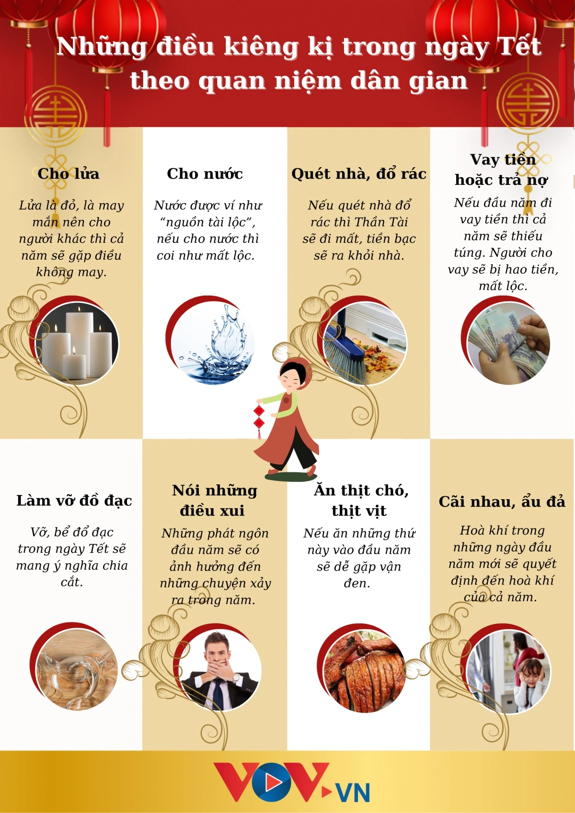
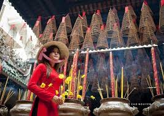

⚠️ Những Điều Kiêng Kỵ Ngày Tết
Trong văn hóa Việt Nam, ngày Tết có nhiều điều kiêng kỵ được truyền từ đời này sang đời khác.
Những điều kiêng kỵ này xuất phát từ quan niệm tâm linh, mong muốn một năm mới suôn sẻ, may mắn.
Mặc dù một số điều có thể mang tính mê tín, nhưng chúng đã trở thành một phần của văn hóa dân tộc.
1. Kiêng Quét Nhà
Một trong những điều kiêng kỵ phổ biến nhất là không quét nhà trong những ngày đầu năm mới.
Quan Niệm:
- Quét nhà trong ngày Tết sẽ quét đi tài lộc, may mắn
- Rác trong nhà được coi là "vàng bạc", quét đi sẽ mất của
- Nên quét nhà trước Tết, không quét trong mùng 1, mùng 2
Thực Tế:
- Nhiều gia đình vẫn giữ phong tục này
- Nếu cần dọn dẹp, nên quét từ ngoài vào trong (giữ tài lộc trong nhà)
- Hoặc đợi đến mùng 3 mới quét nhà
2. Kiêng Cãi Nhau, Nói Lời Không Hay
Trong những ngày Tết, mọi người cố gắng giữ hòa khí, tránh cãi vã, tranh luận.
Quan Niệm:
- Cãi nhau trong ngày Tết sẽ mang lại xui xẻo cho cả năm
- Nói lời không hay, chửi thề sẽ đem lại điều không may
- Nên nói những điều tích cực, vui vẻ
Thực Tế:
- Đây là điều nên làm để giữ không khí vui vẻ
- Tránh các chủ đề nhạy cảm, dễ gây tranh cãi
- Giữ thái độ tích cực, lạc quan
3. Kiêng Làm Vỡ Đồ
Làm vỡ đồ đạc trong ngày Tết được coi là điều không may mắn.
Quan Niệm:
- Làm vỡ đồ sẽ mang lại xui xẻo, rủi ro
- Đặc biệt kiêng làm vỡ bát, đĩa, ly, chén
- Nếu lỡ làm vỡ, nên nói "Của đi thay người" để hóa giải
Thực Tế:
- Cẩn thận khi sử dụng đồ đạc trong ngày Tết
- Nếu lỡ làm vỡ, giữ bình tĩnh, không nên quá lo lắng
- Quan trọng là thái độ tích cực
4. Kiêng Cho Vay Tiền, Mượn Tiền
Người Việt kiêng cho vay hoặc mượn tiền trong những ngày đầu năm mới.
Quan Niệm:
- Cho vay tiền đầu năm sẽ mất tiền cả năm
- Mượn tiền đầu năm sẽ thiếu thốn cả năm
- Nên tránh các giao dịch tài chính trong mùng 1, mùng 2
Thực Tế:
- Nhiều người vẫn tuân theo phong tục này
- Nếu cần thiết, có thể thực hiện sau mùng 3
- Quan trọng là quản lý tài chính hợp lý
5. Kiêng Đổ Rác
Tương tự như quét nhà, việc đổ rác trong ngày Tết cũng bị kiêng kỵ.
Quan Niệm:
- Đổ rác sẽ đổ đi tài lộc, may mắn
- Nên giữ rác trong nhà đến mùng 3 mới đổ
- Hoặc đổ từ ngoài vào trong (giữ tài lộc)
6. Kiêng Mặc Quần Áo Màu Trắng, Đen
Màu trắng và đen được coi là màu tang, không phù hợp với không khí Tết.
Quan Niệm:
- Màu trắng, đen là màu tang, không may mắn
- Nên mặc màu đỏ, vàng, hồng - màu may mắn
- Đặc biệt kiêng trong mùng 1 Tết
Thực Tế:
- Nhiều người vẫn tránh mặc màu trắng, đen ngày Tết
- Ưu tiên màu sắc tươi sáng, vui vẻ
- Tuy nhiên, quan trọng nhất là sự thoải mái
7. Kiêng Khóc Lóc, Buồn Bã
Ngày Tết nên giữ tâm trạng vui vẻ, tránh khóc lóc, buồn bã.
Quan Niệm:
- Khóc lóc đầu năm sẽ buồn cả năm
- Nên giữ tâm trạng tích cực, lạc quan
- Tránh nhắc đến chuyện buồn, tang thương
8. Kiêng Đi Thăm Người Ốm, Người Có Tang
Trong những ngày đầu năm, người ta tránh đi thăm người ốm hoặc gia đình có tang.
Quan Niệm:
- Đi thăm người ốm, có tang sẽ mang lại xui xẻo
- Nên tránh trong mùng 1, mùng 2
- Có thể đi thăm sau mùng 3
9. Kiêng Nói Số 4
Số 4 được coi là không may mắn vì phát âm giống "tử" (chết) trong tiếng Hán.
Quan Niệm:
- Tránh nói số 4, đặc biệt khi lì xì, tặng quà
- Ưu tiên số 8 (phát), số 9 (trường cửu)
- Tránh tặng 4 món, 4 cái
10. Kiêng Cắt Tóc, Cắt Móng Tay
Một số người kiêng cắt tóc, cắt móng tay trong ngày Tết.
Quan Niệm:
- Cắt tóc, cắt móng tay sẽ "cắt" đi may mắn
- Nên cắt trước Tết hoặc sau mùng 3
11. Kiêng Giặt Quần Áo
Một số gia đình kiêng giặt quần áo trong mùng 1, mùng 2 Tết.
Quan Niệm:
- Giặt quần áo sẽ "giặt" đi may mắn
- Nên giặt trước Tết hoặc sau mùng 3
12. Kiêng Đánh Trẻ Em
Trong ngày Tết, người lớn tránh đánh, mắng trẻ em.
Quan Niệm:
- Đánh trẻ em đầu năm sẽ không may mắn
- Nên nhẹ nhàng, kiên nhẫn với trẻ
- Giữ không khí vui vẻ, hòa thuận
Ý Nghĩa Của Các Điều Kiêng Kỵ
Các điều kiêng kỵ ngày Tết có ý nghĩa:
- Tâm linh: Mong muốn một năm mới may mắn, suôn sẻ
- Văn hóa: Một phần của truyền thống dân tộc
- Giáo dục: Dạy con người cẩn trọng, suy nghĩ tích cực
- Xã hội: Tạo không khí hòa thuận, vui vẻ
Lưu Ý Quan Trọng
- Không nên quá mê tín, nhưng nên tôn trọng truyền thống
- Quan trọng nhất là giữ tâm trạng tích cực, lạc quan
- Nếu lỡ vi phạm điều kiêng kỵ, không nên quá lo lắng
- Mỗi gia đình có thể có những điều kiêng kỵ riêng
- Nên giải thích cho trẻ em về ý nghĩa, không ép buộc

⚠️ Kiêng Kỵ
Những điều nên tránh ngày Tết

🍀 May Mắn
Cầu mong may mắn năm mới
Kết Luận
Các điều kiêng kỵ ngày Tết là một phần của văn hóa Việt Nam, thể hiện mong muốn
về một năm mới tốt đẹp. Mặc dù một số điều có thể mang tính mê tín, nhưng chúng
đã trở thành truyền thống và được nhiều người tuân theo. Quan trọng nhất là giữ
tâm trạng tích cực, vui vẻ và tôn trọng những người xung quanh trong dịp Tết.